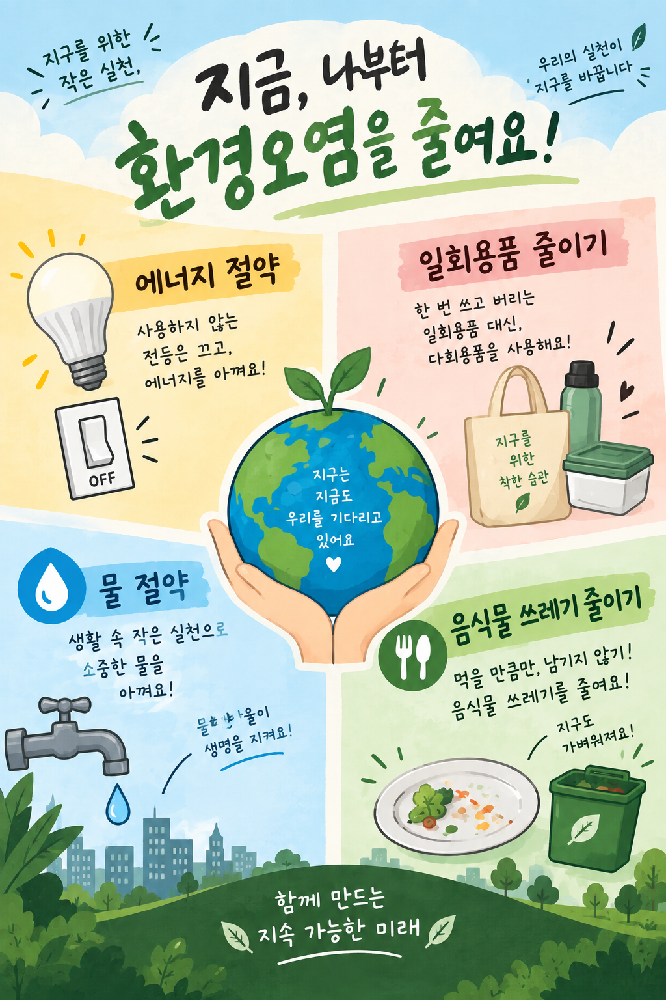

💡에너지 절약
사용하지 않는 조명과 전자제품은 꺼서 불필요한 에너지 사용을 줄여요.
실천 팁: 방을 나갈 때 불 끄기!
오늘의 작은 습관이 내일의 깨끗한 지구를 만듭니다.

우리 생활에서 바로 시작할 수 있는 네 가지 약속을 확인해 보세요.
사용하지 않는 조명과 전자제품은 꺼서 불필요한 에너지 사용을 줄여요.
일회용 컵과 비닐봉지 대신 텀블러와 장바구니처럼 여러 번 쓰는 물건을 사용해요.
양치하거나 비누칠할 때 물을 잠그고, 필요한 만큼만 사용해요.
먹을 만큼만 덜어 먹고, 남기지 않도록 식사량을 조절해요.
오늘부터 한 가지씩 함께 실천해요! 🌱